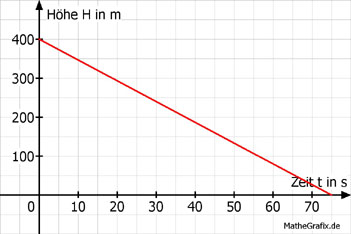

Lineare Funktionen Aufgabe 99 Ein Fallschirmspringer befindet sich in einer Höhe von 400 m und sinkt 320 m pro Minute. a) In welcher Höhe befindet er sich nach 30 s? b) Nach welcher Zeit in min ist er am Boden? a) m = 320 m/min = (320/60) m/s H = 400 - (320/60) * t  H = 400 - (320/60) * 30 H = 400 - 160 = 240 m b) 0 = 400 - (320/60) * t + (320/60) * t (320/60) * t = 400 | *60 320 * t = 24000 | : 320 t = 75 s = 75/60 min = 1,25 min